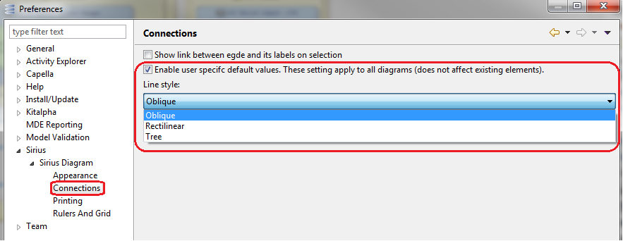
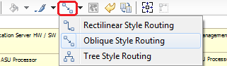

In order to improve the readability on diagrams a functionality on connectors enables to manage the routing style e.g to have rectilinear or oblique connectors.
Open Preferences, in Sirius/Sirius Diagram/Connections checks the box nable user specific default values. These setting apply to all diagrams and select the line style wanted.

If you want to change the line styling on a specific set of connectors, once all connectors are selected, you can also select it in the diagram menu as showed in the following picture:

Once all connectors are selected, you can remove Bend points by clicking right on the computer mouse: